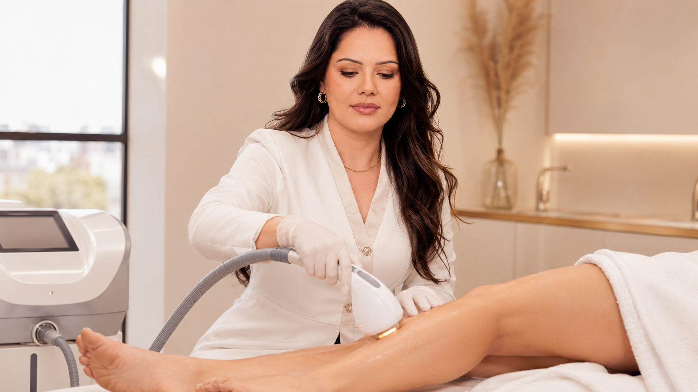
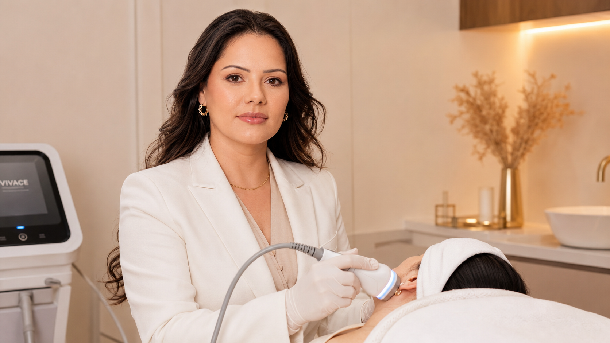
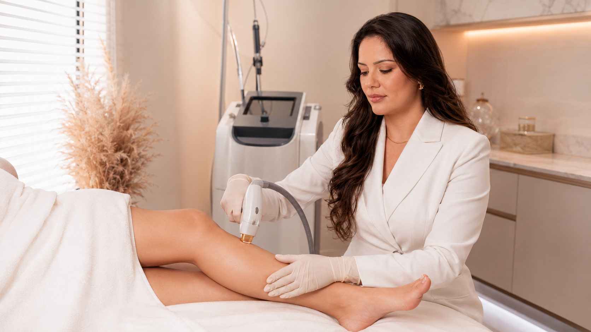

Microdermoabrasão e cuidados
Microdermoabrasão: quando a pele piora e o que relatar?
O que pode ser temporário, o que merece contato e quais informações ajudam a equipe.
Leia o artigo →Saúde da pele · Tecnologia · Cuidado consciente
Perspectivas claras sobre saúde da pele, tratamentos estéticos, prevenção, recuperação, cuidados com o couro cabeludo e planejamento cuidadoso.
Artigo principal
Resultados, cuidados, indicação, segurança e naturalidade explicados a partir da avaliação do seu rosto e da sua expressão.
Leia o artigo principalConsulta e cuidado
Estes artigos explicam por que simplificar, observar e avaliar com atenção pode ser mais útil do que acrescentar imediatamente outro tratamento ou produto.
Microdermoabrasão e cuidados
O que pode ser temporário, o que merece contato e quais informações ajudam a equipe.
Leia o artigo →
Evidência sobre cicatrizes
O formato da cicatriz muda a pergunta; a evidência geral sobre CO₂ não define um protocolo único para todos os casos.
Leia o artigo →
Evidência de peeling
Diagnósticos, fórmulas e desfechos diferentes limitam a transferência dos resultados.
Leia o artigo →
Melasma e evidência
Dois ensaios e uma revisão sistemática: o que os estudos sobre Jessner e melasma permitem — e não permitem — concluir.
Leia o artigo →Peeling de Jessner
O que a evidência diz sobre formulações e resultados — e por que contagem de camadas não é uma promessa.
Leia o guia →
Avaliação vascular
Um consenso vascular de 2023 desaconselha o duplex de rotina em pessoas assintomáticas com telangiectasias ou veias reticulares. Entenda o alcance e os limites dessa orientação.
Leia o artigo →PEIM e microvasos
Gestação pode mudar a aparência das veias. Entenda por que diretrizes vasculares não definem o protocolo do PEIM local.
Leia o artigo →PEIM e evidência
Uma revisão Cochrane e um estudo de acompanhamento ajudam a explicar o que se sabe — e o que não se pode concluir sobre o PEIM local.
Leia o artigo →PEIM e acompanhamento
O que estudos de escleroterapia chamam de pigmentação e matting — e por que isso não define o resultado do PEIM local.
Leia o artigo →Escolhas conscientes
Uma filosofia de cuidado com propósito: menos excessos, mais clareza, segurança e escolhas que respeitam a sua rotina.
Leia o artigo
Consulta e cuidado
Um bom plano começa antes da escolha de um aparelho: com histórico, prioridades, indicação e expectativas realistas.
Leia o artigo
Consulta e cuidado
Como reconhecer uma barreira cutânea sobrecarregada, simplificar uma rotina excessiva e restaurar a tolerância antes de acrescentar ativos ou procedimentos.
Leia o artigo
Consulta e cuidado
O que uma limpeza profissional cuidadosa pode esclarecer, quais obstruções podem ser tratadas com segurança e por que mais pressão nunca significa melhor cuidado.
Leia o artigoSaúde da pele
Cor, textura e vermelhidão podem parecer enganosamente simples. Um planejamento responsável começa pela compreensão do padrão, do histórico e das possíveis causas.
Saúde da pele
A pigmentação tem padrões, gatilhos e memória. Entenda por que a cor precisa ser avaliada antes de escolher como — ou se — deve ser tratada.
Leia o artigoNotas clínicas
Cicatrizes de acne e vermelhidão persistente exigem avaliação precisa. Apenas o nome de um aparelho não explica o que deve acontecer depois.
Saúde da pele
Cicatrizes de acne variam em profundidade, formato e cor. Entenda por que a textura costuma exigir um tratamento gradual e em camadas, não um único aparelho universal.
Leia o artigoLaser e tecnologia
Vermelhidão persistente não é um único diagnóstico. Um guia cuidadoso sobre vasos, inflamação, laser e luz — e sobre quando a avaliação médica deve vir primeiro.
Leia o artigoLaser e tecnologia
Preparação, recuperação, intervalos entre tratamentos e tempo biológico importam tanto quanto o próprio aparelho.
Laser e tecnologia
Uma visão honesta do laser de CO₂ fracionado: para quem ele pode ser indicado, como a preparação contribui para a segurança, o que a recuperação envolve e por que a remodelação leva tempo.
Leia o artigo
Laser e tecnologia
Como ultrassom e radiofrequência diferem, onde o estímulo gradual de colágeno pode ajudar e por que nenhum dos dois deve ser apresentado como um lifting sem cirurgia.
Leia o artigo
Depilação e acompanhamento
Crescimento residual pode ter várias explicações; veja quando revisar o plano antes de repetir.
Leia o artigoCabelo e couro cabeludo
O afinamento capilar pode ser profundamente pessoal. Um primeiro passo responsável é compreender o que está mudando e quando uma investigação médica pode ser necessária.
10 · Cabelo e couro cabeludo
Queda, afinamento e quebra exigem respostas diferentes. Um guia orientado pela causa sobre avaliação do couro cabeludo, encaminhamento e apoio realista de procedimentos.
Leia o artigo
Mais artigos
A mesma edição segue daqui: novos temas, a mesma leitura cuidadosa, com imagem relacionada e acesso direto a cada guia.

Saúde da pele
Proteção solar depende de contexto, reaplicação possível e uma rotina que você realmente consiga manter.
Leia o artigoSaúde da pele
Ardor, repuxamento e descamação merecem contexto antes de trocar ou somar produtos.
Leia o artigoSaúde da pele
Entenda por que combinar ativos sem orientação pode aumentar irritação e manchas.
Leia o artigoSaúde da pele
Higienização demais também pode comprometer conforto e tolerância da pele.
Leia o artigoSaúde da pele
Uma rotina de remoção e observação ajuda a conversar sobre desconforto com mais clareza.
Leia o artigo
Textura e cicatrizes
Iluminação, oleosidade e textura mudam a percepção dos poros; o plano precisa ser honesto.
Leia o artigoSaúde da pele
Entenda limites da manipulação e por que a técnica importa para proteger a barreira cutânea.
Leia o artigo
Textura e cicatrizes
Cicatriz e acne inflamada exigem perguntas diferentes; controlar atividade pode vir primeiro.
Leia o artigoTextura e cicatrizes
Cor e relevo respondem a mecanismos diferentes, por isso precisam de expectativas diferentes.
Leia o artigo
Saúde da pele
Calor, ardor e vasos aparentes podem ter origens distintas e não devem receber um rótulo rápido.
Leia o artigoPigmentação
Pigmentação pode ser influenciada por exposição e inflamação; consistência é mais útil que promessas.
Leia o artigoPigmentação
Irritação, acne e trauma podem deixar cor residual; evitar novas agressões é parte do cuidado.
Leia o artigoSaúde da pele
Mudanças hormonais podem mexer com pigmentação e sensibilidade; a conversa precisa incluir contexto de saúde.
Leia o artigoRenovação da pele
A mesma substância pode ter efeitos muito diferentes conforme veículo, pele, área e preparo.
Leia o artigoRenovação da pele
Fricção pode ser desconfortável para algumas peles e não mede a qualidade de uma rotina.
Leia o artigoRenovação da pele
A técnica pode ter espaço em planos selecionados, sem prometer corrigir toda alteração de textura.
Leia o artigo
Renovação da pele
A escolha de uma renovação mecânica deve considerar sensibilidade, objetivo e recuperação.
Leia o artigo
Renovação da pele
Tecnologia não substitui diagnóstico; ela ganha sentido quando há uma queixa e uma pele avaliadas.
Leia o artigoRenovação da pele
O nome do aparelho não comprova tratamento para acne, manchas ou cicatrizes; entenda os limites e as perguntas úteis.
Leia o artigoRenovação da pele
Descamação e sensibilidade variam; informar produtos, sol e compromissos evita decisões apressadas.
Leia o artigo
Renovação da pele
A recuperação varia por procedimento. Saiba o que confirmar antes de reiniciar produtos ativos.
Leia o artigo →Renovação da pele
A experiência não é igual para todas as pessoas; preparo e pigmentação influenciam a decisão.
Leia o artigoLaser e tecnologia
Exposição solar recente pode mudar a indicação e aumentar o risco de resposta irregular.
Leia o artigoLaser e tecnologia
Pelos faciais podem ter comportamento particular; histórico e expectativa ajudam a planejar com honestidade.
Leia o artigoLaser e tecnologia
Cada região tem um ciclo de crescimento próprio; entenda por que não existe um intervalo universal.
Leia o artigoLaser e recuperação
A recuperação tem variabilidade; compromissos, sol e tolerância precisam estar na conversa antes.
Leia o artigoLaser CO₂
Entenda por que evidências de face, pálpebras e pescoço não definem automaticamente o mesmo plano de laser CO₂.
Leia o artigo →Laser e recuperação
Pele em recuperação pede condutas simples e específicas, especialmente em relação a luz e calor.
Leia o artigoTextura e cicatrizes
Textura, cor, atividade da acne e risco de manchas definem perguntas antes de qualquer aparelho.
Leia o artigoLaser e tecnologia
Luz e laser não são sinônimos; a escolha depende de alvo, pele e possibilidade de cuidado posterior.
Leia o artigoLaser e tecnologia
Estímulos graduais não devem ser apresentados como transformação instantânea; o plano considera resposta e etapas.
Leia o artigoLaser e tecnologia
Ultrassom microfocado é uma tecnologia, não uma promessa única; anatomia e expectativa orientam a conversa.
Leia o artigo
Laser e tecnologia
A pele precisa estar em condições adequadas e a recuperação precisa caber na rotina antes da decisão.
Leia o artigoVasos e circulação
Vasinhos estéticos podem coexistir com questões que pedem outra investigação; a conversa começa por isso.
Leia o artigoVasos e circulação
Histórico, medicamentos, gestação e alterações circulatórias precisam entrar na consulta.
Leia o artigo
Planejamento facial
Uma conversa de qualidade observa expressão e objetivos antes de falar em pontos ou doses.
Leia o artigoPlanejamento facial
O rosto já possui diferenças naturais; a avaliação busca entender o que é possível e desejável suavizar.
Leia o artigo
Planejamento facial
Mandíbula, queixo, pescoço e expressão exigem leitura individual antes de qualquer plano.
Leia o artigoPlanejamento facial
Uma estética coerente com a pessoa começa ao esclarecer o que ela deseja preservar.
Leia o artigoTextura e cicatrizes
Procedimentos que estimulam a pele exigem atenção ao histórico de manchas e à recuperação.
Leia o artigoTextura e cicatrizes
A integridade da pele e a atividade inflamatória são decisivas antes de qualquer estímulo.
Leia o artigoCabelo e couro cabeludo
Queda súbita, áreas localizadas ou sintomas no couro cabeludo podem exigir investigação médica.
Leia o artigoCabelo e couro cabeludo
Luz, penteado e ângulo alteram imagens; registros consistentes ajudam mais que comparações isoladas.
Leia o artigoCabelo e couro cabeludo
Microinfusão exige objetivo claro, pele íntegra e uma conversa responsável sobre causa e acompanhamento.
Leia o artigoMMP e evidência capilar
Estudos de MMP, microagulhamento e terapias injetáveis não são a mesma evidência. Veja como comparar técnica, substância e diagnóstico.
Leia o artigo →Cabelo e couro cabeludo
Afinamento tem origens diferentes; plano, expectativa e acompanhamento precisam respeitar essa diferença.
Leia o artigoConsulta e cuidado
Histórico, rotina e prioridades ajudam mais que escolher um procedimento antes de ser avaliada.
Leia o artigoConsulta e cuidado
Entender indicação, preparo, limites, recuperação e contato pós-procedimento fortalece uma decisão autônoma.
Leia o artigoRecuperação e segurança
Cada protocolo tem evolução própria, mas dor intensa, bolhas ou piora progressiva merecem orientação.
Leia o artigoRecuperação e segurança
Radiação e calor podem alterar tolerância e risco de manchas antes e depois de procedimentos.
Leia o artigoConsulta e cuidado
Luz, ângulo, expressão, tempo e seleção de casos mudam a leitura de qualquer resultado.
Leia o artigoConsulta e cuidado
Imagens, mensagens e informações de saúde merecem discrição, finalidade clara e escolha da paciente.
Leia o artigoSaúde da pele
Quando a pele reage, reduzir variáveis ajuda a observar e conversar com mais segurança.
Leia o artigoConsulta e cuidado
Pele, colágeno, pelo e couro cabeludo têm ritmos; um bom plano explicita intervalos e reavaliações.
Leia o artigoLaser e recuperação
Ablativo e fracionado descrevem aspectos diferentes do tratamento, e nenhum dos termos sozinho revela o protocolo.
Leia o artigoLaser e tecnologia
Cor e espessura do pelo, tom de pele e tipo de laser influenciam a resposta e a conversa prévia.
Leia o artigoRenovação da pele
Compare os métodos, a profundidade variável e as perguntas que ajudam a avaliar cada opção.
Leia o artigoPlanejamento facial
Toxina botulínica e preenchimento não são sinônimos: entenda a diferença geral entre movimento e volume.
Leia o artigoPele e segurança
Ardor, vermelhidão e descamação são informações relevantes antes de um procedimento. Saiba o que relatar e o que perguntar sem autodiagnóstico.
Leia o artigoTecnologia e decisão
Ultrassom focado e radiofrequência são tecnologias diferentes. Entenda o que comparar e por que um nome de aparelho não prevê o resultado.
Leia o artigoDepilação a laser
Irritação após raspar ou pelos encravados podem ter causas diferentes. Entenda como organizar a conversa sobre opções sem presumir diagnóstico ou indicação.
Leia o artigoDepilação e escolhas
Lâmina, cera e laser removem os pelos de maneiras diferentes e trazem compromissos distintos. Compare a lógica de cada método e o que perguntar antes de escolher.
Leia o artigoLaser CO₂ e pigmentação
Alterações de pigmentação são uma questão importante na conversa sobre laser CO₂. Veja o que uma revisão encontrou, quais são seus limites e o que perguntar na avaliação.
Leia o artigoPeeling químico e pigmentação
Tons e histórico de pigmentação são parte da conversa sobre peeling químico. Entenda os limites da pesquisa e as perguntas que ajudam a avaliar opções sem presumir indicação.
Leia o artigoMicrodermoabrasão
Cristais abrasivos e ponteiras de diamante são formas diferentes de microdermoabrasão. Entenda a distinção e quais perguntas ajudam a comparar os serviços sem presumir aparelho ou superioridade.
Leia o artigoPeelings e laser
Peelings químicos e laser CO₂ podem ser considerados para algumas queixas de textura, mas atuam de modos diferentes. Entenda o que uma comparação responsável precisa incluir.
Leia o artigoMicroagulhamento e MMP
Microagulhamento e MMP podem compartilhar microperfurações, mas os nomes não esclarecem por si só o dispositivo, a entrega de substâncias ou o protocolo. Saiba o que comparar.
Leia o artigoLimpeza de pele e acne
Extração e limpeza profissional podem abordar alguns comedões, mas não equivalem a um plano de cuidado da acne. Entenda os limites e quando buscar avaliação.
Leia o artigoMicroagulhamento e segurança
Produtos vendidos para uso doméstico não são necessariamente equivalentes a procedimentos profissionais. Compare finalidade, profundidade, riscos e perguntas sobre segurança.
Leia o artigoTecnologia de plasma
“Plasma” pode nomear tecnologias e produtos diferentes. Entenda por que é importante confirmar o aparelho, a finalidade e o produto antes de comparar tratamentos.
Leia o artigoLimpeza e tecnologia
Peeling ultrassônico e escovas sônicas aparecem em conteúdos sobre limpeza, mas os estudos de um recurso não comprovam o efeito do outro. Veja o que comparar.
Leia o artigoDepilação a laser e segurança
Tatuagem e micropigmentação na área de tratamento são informações importantes. Entenda os limites da evidência e o que perguntar sobre o aparelho e a área.
Leia o artigoDepilação a laser e evidência
Um aumento de pelos após laser ou luz pode ter diferentes explicações. Saiba o que estudos sobre crescimento paradoxal mostram — e por que não permitem prever seu caso.
Leia o artigoUltraformer MPT e avaliação
Estudos de ultrassom microfocado avaliam áreas e aparelhos diferentes. Veja por que contorno, firmeza e volume precisam ser discutidos separadamente antes de planejar uma sessão.
Leia o artigoUltraformer MPT e evidência
Um estudo de 30 pessoas avaliou HIFU com Ultraformer MPT para gordura sob o queixo por quatro semanas. Entenda os resultados relatados e os limites antes de aplicar a evidência ao seu caso.
Leia o artigoMesoterapia capilar e evidência
Estudos de mesoterapia capilar investigam agentes e técnicas diferentes. Veja por que o nome do procedimento, sozinho, não resume evidência, benefício ou risco.
Leia o artigoMesoterapia capilar e segurança
Saiba que informações pedir sobre uma substância injetável, sua regularização e os cuidados explicados antes do procedimento, sem presumir qual produto a clínica utiliza.
Leia o artigoMicrovasos e avaliação
Vasinhos superficiais, veias dilatadas e sintomas nas pernas não contam necessariamente a mesma história. Saiba o que observar e quando conversar com um profissional vascular.
Leia o artigoAvaliação vascular e microvasos
O duplex pode ajudar a avaliar o fluxo venoso em situações selecionadas. Entenda por que o exame não é uma exigência automática para todo microvaso visível nem define sozinho uma proposta estética.
Leia o artigoMicrodermoabrasão e cicatrizes
Cicatrizes deprimidas, marcas planas e cicatrizes elevadas são diferentes. Veja o que a orientação dermatológica diz sobre microdermoabrasão e por que a avaliação depende do tipo de marca.
Leia o artigoMicrodermoabrasão e preparo
Medicamentos e histórico de cicatrização podem mudar a conversa antes de uma esfoliação. Saiba o que informar sem suspender remédios nem aplicar prazos universais.
Leia o artigoPigmentação e acne
Uma marca plana após a acne não é necessariamente uma cicatriz. Entenda por que cor, relevo e textura levam a perguntas diferentes antes de considerar um tratamento.
Leia o artigoMelasma e manchas
Melasma e hiperpigmentação pós-inflamatória podem ser confundidos, mas têm contextos diferentes. Veja por que identificar a causa importa antes de discutir um protocolo para manchas.
Leia o artigoRadiofrequência e técnica
Radiofrequência aplicada por eletrodo na superfície e radiofrequência microagulhada são procedimentos diferentes. Entenda a distinção e as perguntas sobre aparelho, finalidade e risco.
Leia o artigoRadiofrequência e aparelhos
Os termos monopolar e bipolar descrevem configurações de eletrodos, mas não definem sozinhos a intensidade, o resultado ou o protocolo de um aparelho. Saiba o que perguntar.
Leia o artigoTécnicas para o couro cabeludo
Mesoterapia capilar e MMP são nomes que não revelam, sozinhos, a técnica, a substância ou o objetivo de uma proposta. Veja o que perguntar antes de comparar os serviços.
Leia o artigoDepilação a laser e IPL
Aparelhos IPL de uso doméstico e lasers profissionais não são a mesma tecnologia nem têm necessariamente as mesmas indicações. Saiba o que verificar antes de decidir.
Leia o artigo →Peelings químicos
Os nomes Jessner e retinoico não revelam, sozinhos, formulação, profundidade ou recuperação. Veja como comparar objetivos e evidências sem presumir equivalência.
Leia o artigo →Ultraformer MPT e expectativas
Ultrassom microfocado e lifting cirúrgico atuam de formas diferentes. Entenda o limite da comparação e quais perguntas ajudam a alinhar o objetivo com a opção avaliada.
Leia o artigo →Toxina botulínica e segurança
A Anvisa alerta que sintomas graves podem surgir horas ou semanas após uma aplicação. Saiba quais sinais exigem atendimento médico imediato e quais informações levar.
Leia o artigo →Ultraformer MPT e tecnologia
HIFU descreve uma categoria de ultrassom focado; MPT identifica uma tecnologia da linha Ultraformer. Entenda por que os nomes não revelam o protocolo nem comprovam um resultado.
Leia o artigo →Limpeza de pele e extração
Cravos e milium podem parecer pontos brancos ou escuros, mas não são necessariamente a mesma alteração. Entenda por que reconhecer a diferença muda a conversa sobre extração.
Leia o artigo →Peeling retinoico e cuidados
Um peeling profissional e um produto com retinol para usar em casa não são intercambiáveis pelo nome. Saiba o que comparar e o que informar antes de um procedimento.
Leia o artigo →Peeling retinoico e melasma
Um ensaio brasileiro comparou formulações específicas; acompanhe os achados e limites.
Leia o artigo →Tecnologia de plasma
Pequenos estudos documentam pigmentação após modalidades específicas; veja os limites desses achados e o que confirmar sobre o aparelho.
Leia o artigo →Microdermoabrasão e rosácea
Rosácea ativa e vasos frágeis mudam a avaliação antes da esfoliação; veja as cautelas e perguntas úteis.
Leia o artigo →Microdermoabrasão e dermabrasão
Microdermoabrasão é superficial; dermabrasão é um procedimento mais profundo. Compare finalidade e recuperação.
Leia o artigo →Laser e gravidez
Revisões apontam falta de dados para depilação cosmética durante a gestação. Entenda a cautela sem confundir incerteza com dano comprovado.
Leia o artigo →Laser e eletrólise
Compare pigmento, método, sessões e riscos; a disponibilidade local de eletrólise não está confirmada.
Leia o artigo →Laser e pseudofoliculite
Pequenos estudos apoiam uma conversa cautelosa, mas não confirmam o LightSheer local para essa condição.
Leia o artigo →Laser e pintas
Laser pode alterar a aparência de nevos; conte à equipe sobre lesões na área e peça avaliação de manchas novas ou em mudança.
Leia o artigo →LightSheer Duet
Entenda o que a documentação do fabricante descreve e por que a configuração instalada precisa ser confirmada.
Leia o artigo →Renovação da pele
Poros podem parecer maiores por motivos diferentes. Entenda os limites da esfoliação e o que perguntar na avaliação.
Leia o artigo →Laser e luz
Manchas e vermelhidão podem ter causas diferentes. Entenda por que identificar o alvo e a modalidade importa antes de considerar laser ou luz.
Leia o artigo →Toxina botulínica
Antes de repetir toxina botulínica, organize data, indicação e produto das aplicações anteriores. Veja o que a Anvisa recomenda e por que o intervalo depende da bula.
Leia o artigo →Couro cabeludo e fios
Entenda como a avaliação médica da queda capilar pode começar e por que exames de sangue ou biópsia só são pedidos conforme a hipótese clínica.
Leia o artigo →Radiofrequência
Entenda a diferença entre mecanismo, resultado clínico e promessa ao avaliar estudos sobre radiofrequência para firmeza da pele.
Leia o artigo →Limpeza de pele
Não existe uma frequência universal para limpeza de pele profissional. Veja como avaliar o objetivo, a resposta da pele e quando acne pede outro plano.
Leia o artigo →Saúde vascular
Inchaço repentino em uma perna, dor, calor ou vermelhidão precisam de avaliação de saúde. Saiba quando não esperar por uma consulta estética.
Leia o artigo →Mesoterapia capilar
Um roteiro para conversar sobre produto, evidência, riscos, alternativas e acompanhamento sem presumir o protocolo da clínica.
Leia o artigo →Mesoterapia capilar e evidência
Ensaios de minoxidil injetado variam por diagnóstico e protocolo; veja o que perguntar sobre o produto real.
Leia o artigo →MMP e segurança
O que perguntar sobre materiais, produto, validade e registros sem presumir o protocolo da clínica.
Leia o artigo →MMP e segurança de medicamentos
Um ensaio e um relato com metotrexato mostram por que entrega cutânea não prova absorção zero.
Leia o artigo →
Microagulhamento e pigmentação
Estudos específicos não sustentam uma regra universal de segurança ou contraindicação. Entenda seus limites e o que perguntar na avaliação.
Leia o artigo →Radiofrequência e experiência
A sensação depende do aparelho e do protocolo. Veja o que perguntar e como combinar a comunicação durante a sessão.
Leia o artigo →Tecnologia de laser e luz
A plataforma pode reunir modalidades diferentes; veja o que confirmar sobre fonte, aplicador e objetivo.
Leia o artigo →Rosácea e tecnologia de luz
Rosácea, vasos visíveis e vermelhidão persistente exigem perguntas diferentes sobre luz e laser.
Leia o artigo →Peeling e acne
Ensaios pequenos ajudam a formular perguntas, mas não definem a indicação nem o protocolo local.
Leia o artigo →Toxina botulínica e avaliação
Um roteiro para organizar seu histórico e conversar sobre o produto específico, sem suspender medicamentos por conta própria.
Leia o artigo →Toxina botulínica e evidência
Gestação e amamentação têm evidências e bulas distintas. Entenda os limites dos dados e por que é essencial confirmar o produto.
Leia o artigo →Planejamento facial e segurança
Um roteiro para discutir histórico, produto, indicação, riscos e acompanhamento antes de decidir.
Leia o artigo →Cicatrizes de acne e comparação
O que estudos comparativos permitem dizer sobre mecanismos, pigmentação e limites.
Leia o artigo →Microagulhamento e segurança
Higiene, herpes, infecções e produtos são perguntas importantes antes de avaliar o procedimento.
Leia o artigo →Microagulhamento e avaliação
Um roteiro para conversar sobre medicamentos, condições de saúde, alergias e cicatrização sem suspender remédios por conta própria.
Leia o artigo →Pigmentação e cuidado contínuo
Melasma pode reaparecer; veja por que manutenção e acompanhamento são diferentes para cada plano.
Leia o artigo →Pigmentação e produtos
Como consultar a regularização de um produto e distinguir categoria, alegação e avaliação individual de uma alteração de cor.
Leia o artigo →Uma mensagem de Franciele
Estes artigos oferecem um contexto útil, mas não conseguem avaliar sua pele nem confirmar uma indicação. Leve suas dúvidas à consulta caso queira uma orientação que considere seu histórico e suas prioridades.
Leituras em português
Laser e tecnologia
Pigmentação
Textura e cicatrizes
Laser e recuperação
Tecnologia e cuidado
Couro cabeludo
Renovação da pele
Planejamento facial
Ultraformer MPT and recovery
Veja quais perguntas ajudam a planejar uma conversa sobre sensação e recuperação sem importar prazos de outros aparelhos.
Leia o artigo →Toxina botulínica
Diferencie a indicação estética para linhas faciais da prevenção clínica de migrânea crônica.
Leia o guia →Microagulhamento e cicatrizes rolling
Estudo comparativo limitado explica por que microagulhamento e subcisão não são intercambiáveis.
Leia o artigo →Depilação a laser e cor dos pelos
A resposta depende do pigmento-alvo e da avaliação de cada região; veja o que perguntar antes de decidir por sessões.
Leia o artigo →Tecnologia de laser e luz
Plataformas podem reunir aplicadores e modalidades diferentes. Saiba o que confirmar sobre modelo, ponteira e finalidade.
Leia o artigo →Tecnologia de plasma
O nome plasma pode se referir a tecnologias diferentes. Entenda por que estudos e protocolos não são intercambiáveis.
Leia o artigo →Ultraformer MPT and recovery
O tipo exato de plasma e o modo de entrega mudam o que pode ser comparado com laser CO₂.
Leia o artigo →Tecnologia de plasma
O nome plasma pode se referir a tecnologias diferentes. Entenda por que estudos e protocolos não são intercambiáveis.
Leia o artigo →Peeling de diamante e limpeza profunda
Esfoliação superficial e extração de comedões são etapas diferentes. Veja o que perguntar sobre cada serviço antes de escolher.
Leia o artigo →Radiofrequência e segurança
O tipo de implante e o modelo do aparelho precisam ser confirmados antes de avaliar compatibilidade.
Leia o artigo →Radiofrequência e segurança
Placas, próteses e outros implantes exigem checagem do aparelho exato e de suas instruções.
Leia o artigo →Pigmentação e avaliação
Uma lesão nova ou em mudança precisa de avaliação antes de presumir uma queixa estética.
Leia o artigo →Pigmentação e acompanhamento
Como fotos consistentes podem apoiar o acompanhamento — e por que imagem não substitui avaliação ou consentimento.
Leia o artigo →Melasma e planejamento
Fotoproteção, cuidado tópico e procedimentos têm papéis diferentes. Veja como conversar sobre cada parte do plano sem presumir um protocolo.
Leia o artigo →Tecnologia de plasma e segurança
Confira modalidade, modelo e finalidade nas fontes oficiais e no manual do aparelho.
Leia o artigo →Tecnologia de plasma e avaliação
Avalie a natureza da lesão e confirme aparelho e indicação antes de considerar um procedimento.
Leia o artigo →Evidência sobre plasma exeresis
Estudo pequeno, sem controle e com seguimento curto: entenda o alcance e os limites da evidência.
Leia o artigo →
Tecnologia de plasma
Ensaio, correção publicada e limites da comparação entre plasma exeresis e crioterapia.
Leia o artigo →Plasma e recuperação
O prazo depende do aparelho e da modalidade. Veja por que a recuperação descrita para outro sistema não define o protocolo local.
Leia o artigo →Plasma exeresis e pálpebras
Veja o que estudos pequenos avaliaram e por que “sem cirurgia” não significa equivalência.
Leia o artigo →Limpeza e tecnologia
Entenda a diferença entre a espátula ultrassônica e a extração de comedões.
Leia o artigo →Vasos e circulação
Cuidados e acompanhamento dependem da técnica e do produto; saiba o que confirmar.
Leia o artigo →Vasos e circulação
Entenda por que o objetivo estético, o contexto vascular e o escopo profissional precisam ficar claros.
Leia o artigo →Planejamento facial
Entenda por que prazos variam entre produtos, estudos e pessoas.
Leia o artigo →Laser e recuperação
O que observar, quando contactar a equipe e por que o protocolo depende da modalidade.
Leia o artigo →Depilação a laser
Uma lista prática para a consulta, sem interromper medicamentos por conta própria.
Leia o artigo →Peeling ultrassônico
O que relatar sobre ardor, coceira ou irritação antes de avaliar o procedimento.
Leia o artigo →MMP e segurança
Um checklist para confirmar produto, via, indicação e regularização.
Leia o artigo →Peeling de ATA
Entenda os termos de profundidade e o que confirmar sobre o plano.
Leia o artigo →Planejamento facial
Como comparar agentes químicos, formulações e planos sem presumir o protocolo local.
Leia o artigo →Peeling químico
Entenda os termos de profundidade e o que confirmar sobre o plano.
Leia o artigo →Peeling ultrassônico
Perguntas sobre itens reutilizáveis, processamento e o que precisa ser confirmado para o aparelho.
Leia o artigo →Peeling ultrassônico e gestação
Não há estudos específicos da espátula estética; confirme o aparelho e converse com o pré-natal.
Leia o artigo →Limpeza de pele profunda
Entenda por que esses pontos podem ter origens diferentes e o que uma limpeza pode realisticamente fazer.
Leia o artigo →Ultraformer MPT
Entenda o que uma análise imediata em 50 pacientes mediu e por que não prevê duração ou resultado individual.
Leia o artigo →Peeling de ATA
O ensaio adicionou TCA a medicamentos tópicos e teve resultados mistos; entenda os limites antes de comparar com um protocolo real.
Leia o artigo →Peeling de ATA e cicatrizes
TCA CROSS focal e peeling de ATA em área ampla são técnicas diferentes; veja o que os estudos realmente avaliaram.
Leia o artigo →Peeling ultrassônico
Entenda a diferença entre a espátula vibratória e a quimioesfoliação e compare a proposta concreta.
Leia o artigo →Peeling ultrassônico
Compare métodos distintos e entenda por que os estudos de microdermoabrasão não comprovam resultados da espátula ultrassônica.
Leia o artigo →Ultraformer MPT
Antes de considerar ultrassom microfocado, diferencie a preocupação com firmeza da pele, volume e contorno facial; cada uma pede uma avaliação própria.
Leia o artigo →Limpeza de pele profunda
Uma limpeza profissional não precisa extrair toda lesão. Entenda por que avaliação, tipo de lesão e limites de escopo importam.
Leia o artigo →Peeling retinoico
Saiba por que exposição solar recente deve entrar na conversa antes de um peeling, sem transformar orientação geral em prazo universal.
Leia o artigo →Radiofrequência
Entenda por que aparelhos de radiofrequência variam por uso previsto, área e configuração e quais dados confirmar antes de comparar.
Leia o artigo →Plataforma Harmony de laser e luz
Antes de comparar luz intensa pulsada e laser, confirme qual modalidade, aplicador, alvo e evidência se aplicam à proposta.
Leia o artigo →Toxina botulínica — terço superior da face
Entenda por que a avaliação de expressões considera mais de uma região e quais perguntas ajudam a definir prioridades, sem mapas ou instruções de aplicação.
Leia o artigo →Peeling de ATA
Entenda por que histórico de pigmentação, profundidade e fórmula entram na conversa sobre peeling de ATA, sem presumir risco individual.
Leia o artigo →Laser CO₂
Saiba por que histórico de herpes labial ou surtos após procedimentos deve ser mencionado antes de conversar sobre resurfacing com laser CO₂.
Leia o artigo →Limpeza de pele profunda
Ardor ou irritação recorrente merece contexto antes de uma limpeza. Veja quais detalhes compartilhar sem tentar diagnosticar a pele.
Leia o artigo →Peeling ultrassônico
A descrição fala em vibração ultrassônica e uma espátula, mas não identifica o aparelho, sua configuração ou a evidência aplicável.
Leia o artigo →Conte o histórico de manchas após acne ou irritação antes de discutir esfoliação superficial.
Como descrever uma mudança, quais dados do produto levar e quais sinais exigem atendimento imediato.
Entenda por que produto, via prevista e regularização precisam corresponder ao uso.
Peeling ultrassônico · evidência
O que estudos de sonoforese mostram — e por que seus resultados não podem ser transferidos automaticamente para uma espátula de limpeza.
Leia o artigo →Toxina no platisma e evidência
Um ensaio de fase 3 avaliou bandas musculares durante a contração. Entenda o que seus resultados não comprovam sobre flacidez ou volume.
Leia o artigo →Laser CO₂ · avaliação e pigmentação
Fototipo, histórico pessoal e modalidade importam; veja o que estudos específicos não permitem prever para cada pessoa.
Leia o artigo →Harmony · preparo para luz e laser
Exposição solar recente, queimadura e autobronzeador devem ser relatados; modalidade e avaliação determinam o próximo passo.
Leia o artigo →Laser/IPL e histórico de saúde
Avise a equipe antes de voltar; não suspenda remédios nem presuma um prazo universal.
Leia o artigo →Radiofrequência · acompanhamento
Fotos, escalas clínicas e percepção pessoal são medidas diferentes; veja como os estudos acompanham cada uma.
Leia o artigo →Radiofrequência
Entenda por que as evidências distinguem gestação e amamentação e quais detalhes confirmar antes de decidir.
Leia o artigo →Microagulhamento · recuperação
Reações possíveis, mudanças que justificam contato e por que o plano deve corresponder ao procedimento realizado.
Leia o artigo →Ultraformer MPT · acompanhamento
Estudos avaliam áreas e objetivos diferentes em momentos distintos; veja por que os prazos não são uma previsão individual.
Leia o artigo →Segurança · laser e IPL
Por que a proteção precisa corresponder à fonte de luz e ao aparelho, especialmente perto dos olhos.
Leia o artigo →Radiofrequência · preenchimento
Estudos específicos não definem um intervalo universal; veja o que confirmar sobre produto, região e aparelho.
Leia o artigo →Toxina botulínica · avaliação
Como distinguir uma característica ligada ao movimento de uma que permanece em repouso, sem tentar se diagnosticar por fotos.
Leia o artigo →PEIM · compressão após o procedimento
Estudos de escleroterapia testam protocolos distintos; saiba por que não definem automaticamente as orientações do PEIM.
Leia o artigo →Pigmentação · hidroquinona
O que uma mudança de cor durante o uso exige discutir com a profissional e o que relatos raros não permitem concluir.
Leia o artigo →Ultraformer MPT · implantes
Informe os implantes dentários e confirme o manual do aparelho, a ponteira e a área antes de decidir.
Leia o artigo →Mesoterapia capilar · acompanhamento
Densidade, queda, fotografias e percepção pessoal medem desfechos distintos; entenda o que perguntar no retorno.
Leia o artigo →Ultraformer MPT · preenchimento
Um estudo pequeno no abdômen não define o intervalo após preenchimento facial nem o protocolo da clínica.
Leia o artigo →Ultraformer MPT · região dos olhos
Um estudo pequeno com proteção corneana traz evidência inicial; saiba o que perguntar sobre aparelho, área e segurança ocular.
Leia o artigo →Mesoterapia capilar · avaliação
Queda difusa pode ser temporária, mas o padrão e a evolução ajudam a decidir quando investigar antes de discutir um procedimento.
Leia o artigo →Toxina botulínica · terço inferior
Movimentos do sorriso, fala e vedamento dos lábios fazem parte da avaliação funcional antes de considerar um procedimento.
Leia o artigo →Radiofrequência · segurança
Entenda por que um alerta sobre certos usos de radiofrequência microagulhada não se aplica automaticamente a todas as modalidades.
Leia o artigo →PEIM · avaliação de microvasos
Entenda o que termos vasculares descrevem e por que cor ou foto não determinam sozinhas uma proposta.
Leia o artigo →PEIM · laser e luz
Compare modalidades e perguntas para avaliar o alvo, sem presumir que PEIM, laser e IPL sejam equivalentes.
Leia o artigo →Tecnologia de plasma · pigmentação
O que estudos de modalidades diferentes dizem — e por que não permitem prever o risco do aparelho local.
Leia o artigo →Limpeza de pele · cuidado diário
Entenda a diferença entre uma sessão profissional, os cuidados cotidianos e a avaliação de acne.
Leia o artigo →Radiofrequência · pigmentação
Entenda por que estudos de microagulhamento, radiofrequência monopolar e outros dispositivos não são intercambiáveis.
Leia o artigo →Peeling ultrassônico · preparação
O que informar sobre tretinoína, retinol, ácidos e irritação sem inventar um intervalo universal de pausa.
Leia o artigo →Terço inferior · comparação de objetivos
Compare preocupações dinâmicas e estruturais sem presumir que toxina, aparelhos e cirurgia sejam equivalentes.
Leia o artigo →Plasma e cuidados
Entenda por que os cuidados dependem da modalidade e quais instruções confirmar com a equipe.
Leia o artigo →PEIM e segurança
Saiba por que compartilhar seus medicamentos e não suspender nenhum sem orientação clínica.
Leia o artigo →Queda capilar e avaliação
Entenda por que avaliar a causa antes de discutir procedimentos injetáveis para queda capilar.
Leia o artigo →Ultraformer MPT e segurança
Como relatar mudanças de sensibilidade ou movimento e reconhecer sinais que exigem urgência.
Leia o artigo →Limpeza de pele e medicamentos
Entenda por que as etapas da limpeza e a condição da pele precisam ser avaliadas durante o tratamento.
Leia o artigo →Laser, IPL e segurança
Saiba por que pigmentos decorativos e cosméticos precisam entrar na avaliação da área.
Leia o artigo →